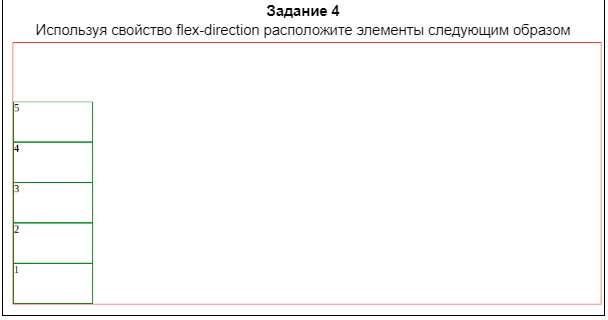
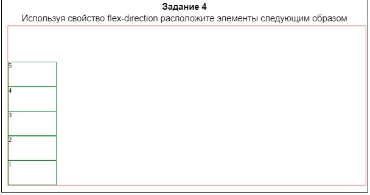

Основы работы с flexbox
Flexbox (официальное название CSS Flexible Box Layout Module) - это новый модуль для макетов в CSS3, направленный на улучшение работы с элементами, их выравнивание, изменения направление и порядка их в контейнере, даже когда они динамические или неизвестного размера. Важнейшей особенностью flex-контейнера является возможность изменять ширину или высоту ее потомков, чтобы заполнять свободное пространство при различных размерах экрана.
Модель flexbox
Flex-макет состоит из родительского контейнера, назовем его flex-container, и его блоков-потомков, которые называются flex-items

Главная задумка flex-вёрстки в наделении контейнера способностью изменять ширину/высоту (и порядок) своих элементов для наилучшего заполнения пространства. Flex-контейнер растягивает элементы для заполнения свободного места или сжимает их, чтобы предотвратить выход за границы.
Использование
Чтобы использовать макет flexbox нужно просто установить свойство display для родительского HTML-элемента (‘то свойство достаточно установить только для родительского контейнера и все его прямые потомки автоматически станут flex-элементами)
- .flex-container{
- display: flex;
- }
- margin: 20px;
Если необходимо отображать его как inline элемент можно использовать свойство inline-flex
- .flex-container{
- display: inline-flex;
- }
Flexbox-свойства контейнеров
Одним из основных понятий в flexbox являются оси. Главной осью flex-контейнера является направление, в соответствии с которым располагаются все его дочерние элементы. Поперечной осью называется направление, перпендикулярное главной оси.

Главная ось по умолчанию располагается слева направо. Поперечная – сверху вниз. Направление главной оси flex-контейнера можно задавать, используя базовое css свойство flex-direction
flex-direction
Это свойство определяет, как flex-элементы размещаются в flex-контейнере, устанавливает направление главной оси flex-контейнеров. Они могут быть установлены в двух основных направлениях, как строки по горизонтали или как колонки по вертикали.
Доступные значения flex-direction:
- row (значение по умолчанию) : слева направо (в rtl справа налево)
- row-reverse: справа налево (в rtl слева направо)
- column: сверху вниз
- column-reverse: снизу вверх


 
